Frame House: Full brand identity, frame by frame
A full identity guide for an independent, community-centered movie theater — built to feel like a cultural hub, not just a place to watch a film.
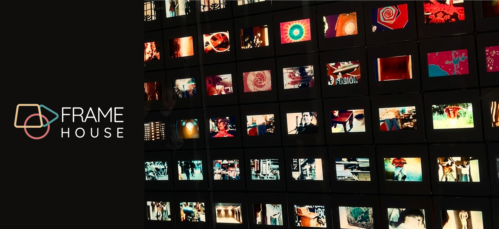
Frame House is an independent, community-centered movie theater focused on preserving film culture and elevating indie, international, and underrepresented voices. Unlike traditional theaters, it operates as a living archive, where programming is shaped by both film history and community input.
- 01 Position Frame House as a cultural hub, not just a theater
- 02 Transform film data into emotional, visual storytelling
- 03 Encourage community participation through interactive programming
- 04 Support scalability as the brand expands to new cities
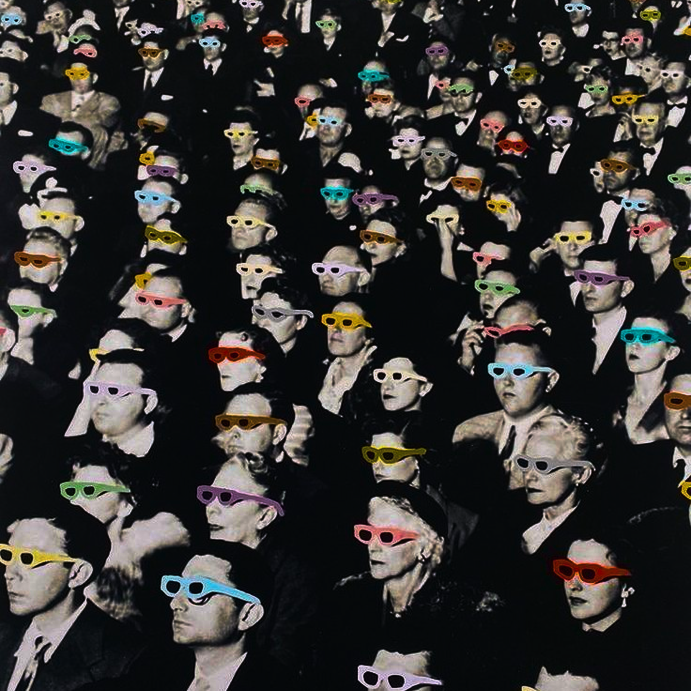
Before the mark, a mess of references.
I started by pulling together everything that felt like Frame House before I knew what Frame House looked like — film stills, type treatments, data visualizations, even a Nike ad — looking for the throughline between film history, data, and feeling.
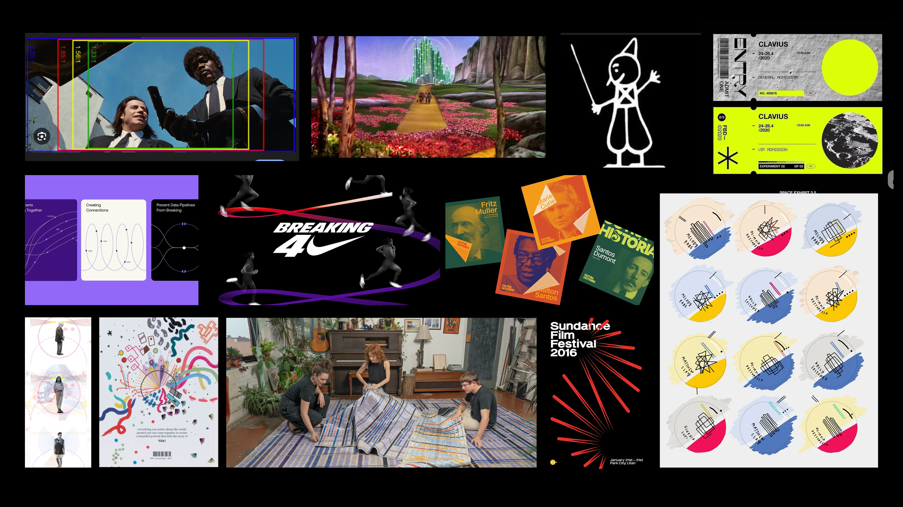
From there, sketches helped me test which shapes could actually carry meaning — circles, trapezoids, and filmstrip motifs, tried in every combination, in CMYK to keep the film-process reference honest from the start.
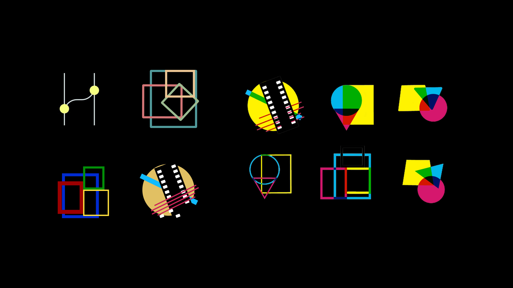
A mark built from film history itself.
Every shape in the mark is a quiet reference: the trapezoid nods to letterboxing, the practice of framing widescreen film on a narrower screen without losing its original ratio. The play-button triangle is a direct callback to Fantasmagorie (1908), one of the earliest animated films on record. The three overlapping rings echo the CMYK tints that made Technicolor's layered color processes possible.
Together, the shapes overlap the way film history does — built by people, and by time.
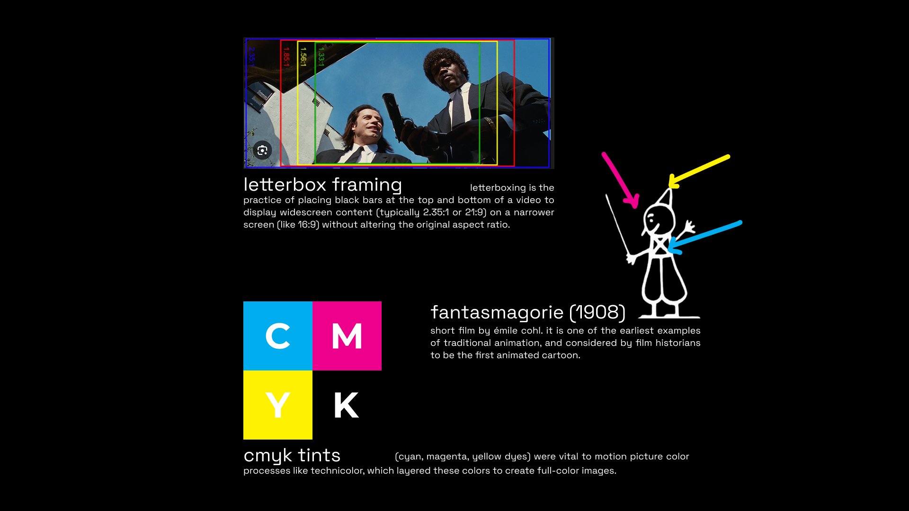
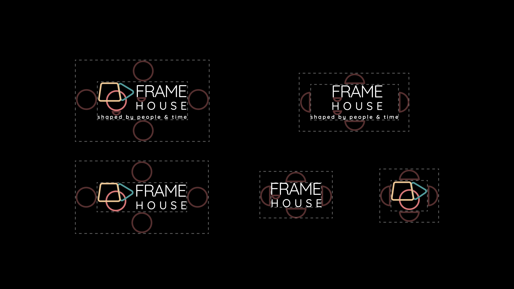
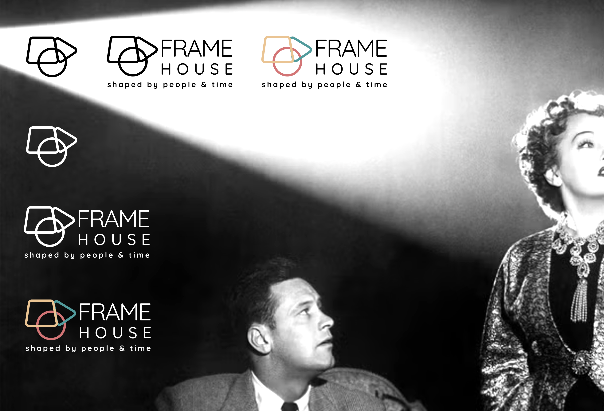
Three voices for one brand.
A geometric sans for structure, a warm serif for storytelling, and a technical grotesk for the digital product — each one earning its place in the system.
Aa
Quicksand
Aa
Newsreader
Aa
Space Grotesk
A palette pulled from film stock, not trend boards.
Warm, slightly faded tones — closer to a found roll of film than a modern app icon.
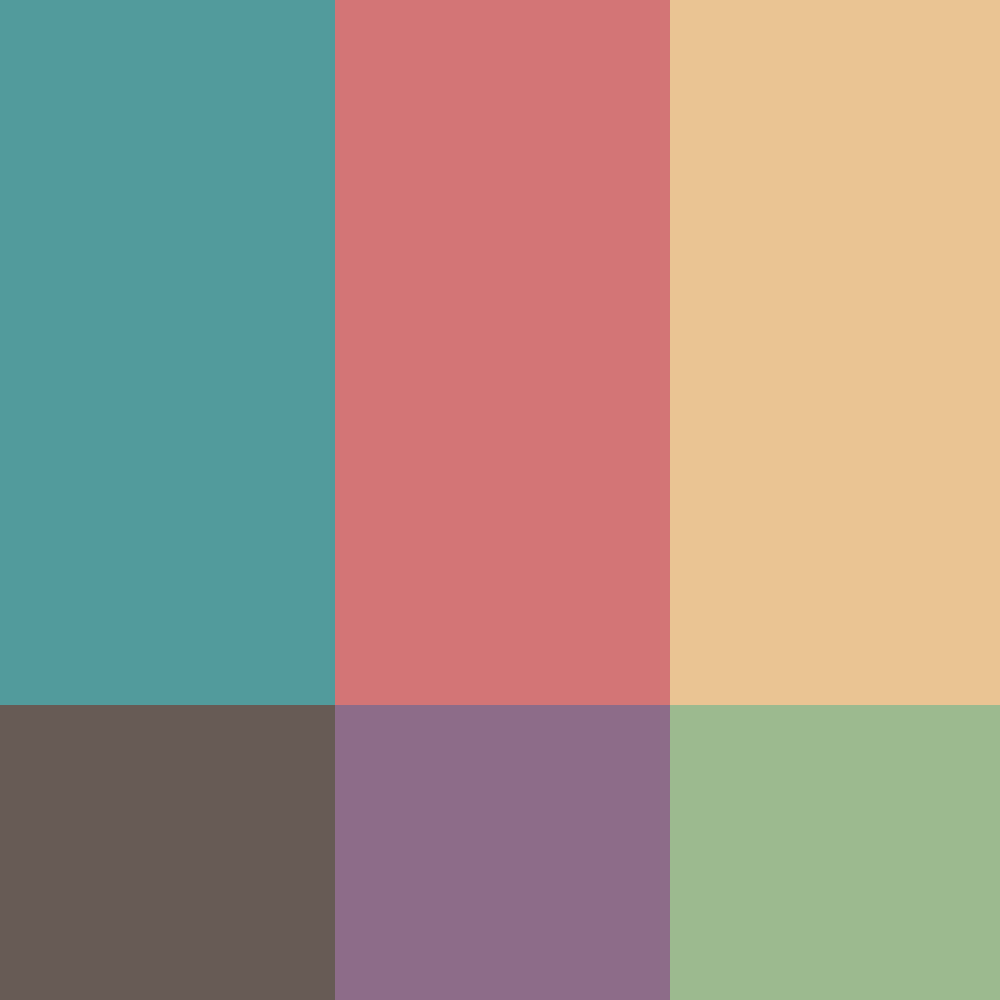
The shapes aren't decoration — they're plot structure.
Every circle, triangle, and trapezoid scattered across the identity traces back to a classic story arc — the rise-and-fall patterns writers have used for centuries to map narratives like Cinderella (rise-fall-rise), Oedipus (fall-rise-fall), and Man in a Hole (a fall followed by a rise). Each shape marks a beat plotted against the story's run time, in the spirit of Giorgia Lupi's data-humanism — using hand-drawn, personal marks to make data feel emotional rather than clinical.
That same visual language — a shape standing in for a story beat, a color standing in for a feeling — became the backbone of the whole system, resurfacing on the badges, the tote bag, and the popcorn cups.
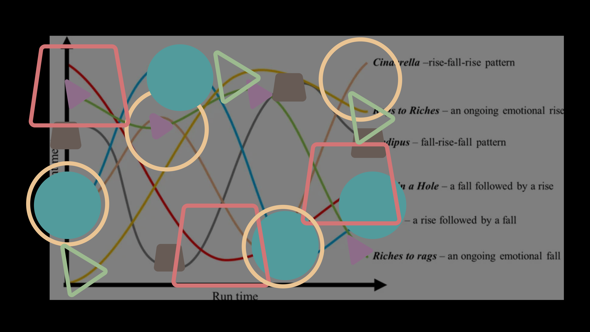
A system built to live outside the screen.
Posters, tickets, badges, and merch — every touchpoint carries the same shapes, palette, and voice, so Frame House feels recognizable whether you're in the lobby or on the street.


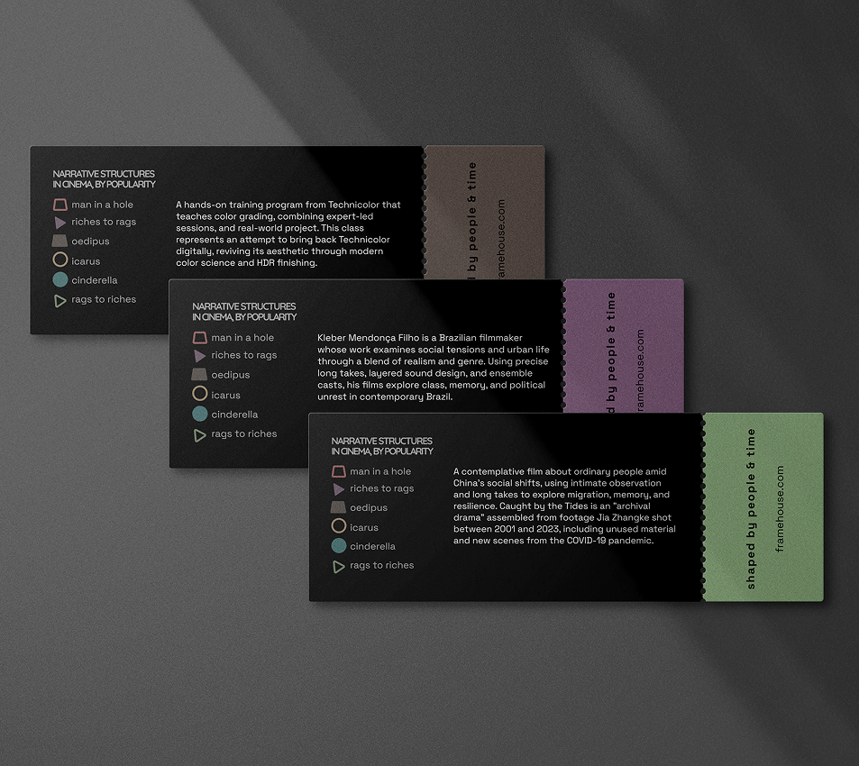


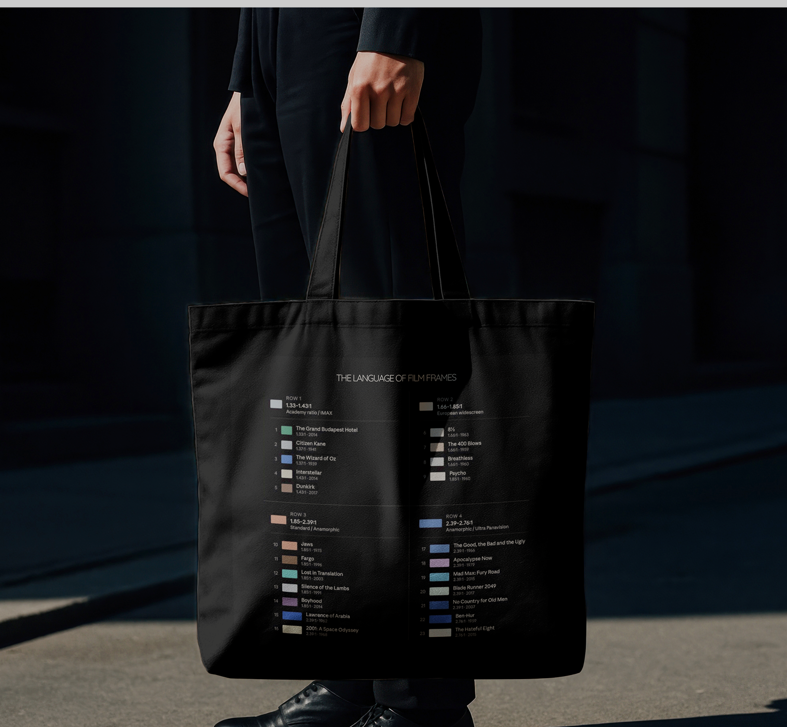

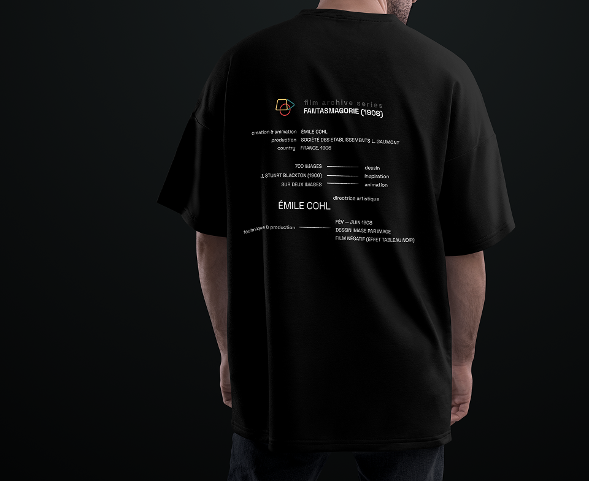
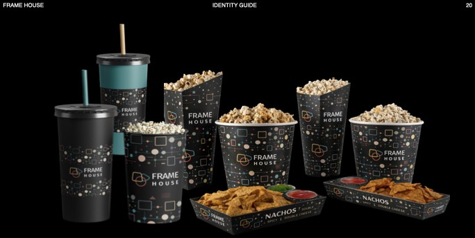
The identity, carried into the pocket.
Booking a seat, browsing what's playing, and exploring the catalog all needed to feel like the same Frame House — same shapes, same palette, same sense that every screen is shaped by people and time.
Strong design needs both visual expression and consistency — and the collaboration along the way is what actually strengthens the final outcome.
Reflections on the project
What this project taught me.
We explored how color, shape, and symbols can communicate information and meaning on their own, before a single word of copy gets added.
We realized that strong design requires both visual expression and consistency — a striking mark means little if it falls apart the moment it's applied to a ticket, a tote bag, or a bus stop ad.
And we learned that collaboration played a real role in aligning ideas and strengthening the final outcome — the best version of this identity wasn't the first one any of us sketched alone.